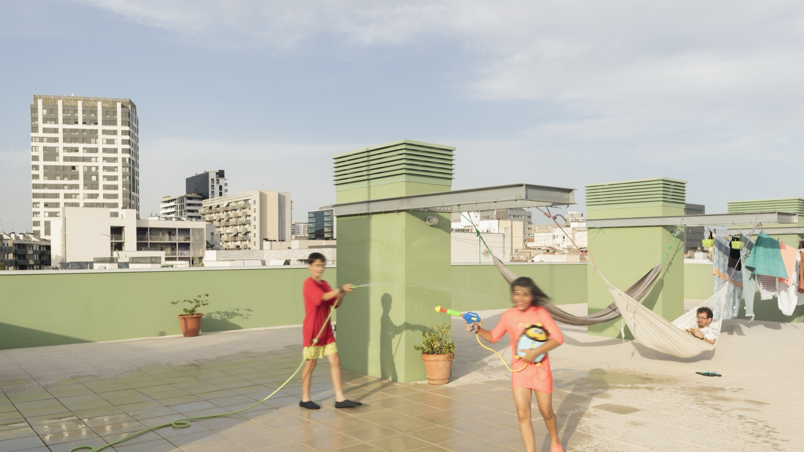
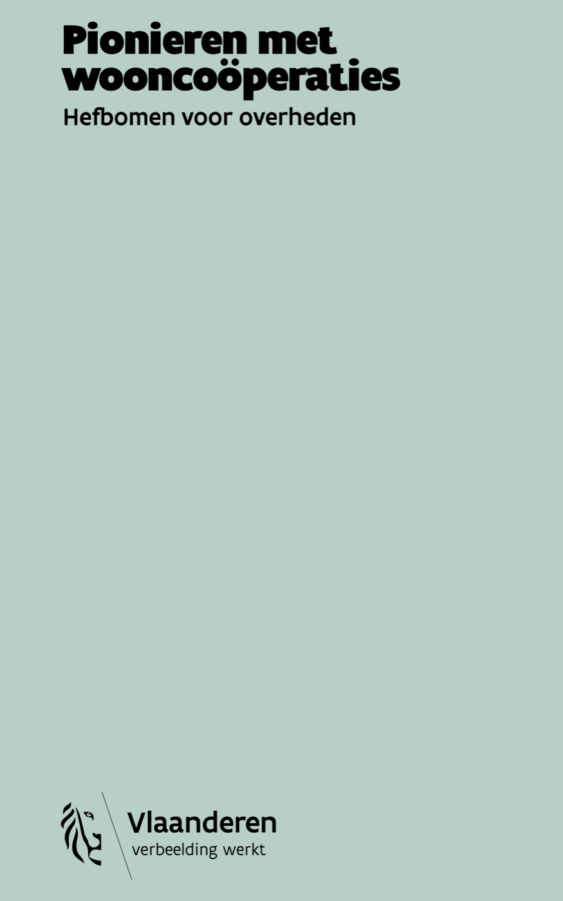

Pionieren met wooncoöperaties. Hefbomen voor overheden
De wooncoöperatie wint voorzichtig terrein in Vlaanderen als alternatief voor het klassieke huren en kopen. Bewoners worden aandeelhouder van een coöperatieve vennootschap die de woningen bezit, beheert en onderhoudt. Maar hoe kunnen overheden deze woonvorm ondersteunen? En welke voorwaarden zijn nodig om coöperatieve woonprojecten financieel en organisatorisch haalbaar te maken?
De publicatie Pionieren met wooncoöperaties. Hefbomen voor overheden bundelt de inzichten uit een tweejarig leertraject in opdracht van de Vlaamse overheid. Aan de hand van vijf proeftuinen in Antwerpen, Gent, Lier, Kampenhout en Zedelgem onderzochten verschillende partners de mogelijkheden en knelpunten van coöperatief wonen. Daarbij kwamen zowel de maatschappelijke meerwaarde als de ruimtelijke, financiële en beleidsmatige uitdagingen aan bod.
Het onderzoek identificeert drie belangrijke hefbomen voor overheden: toegang tot grond, een haalbare financieringsmix en de nodige expertise. De publicatie biedt daarmee concrete aanknopingspunten voor lokale besturen die coöperatieve woonprojecten willen stimuleren. Het boek verscheen in februari 2025 bij het agentschap Wonen in Vlaanderen en het Departement Omgeving.
